After the completion of this lesson, students will be able to:
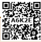
Physics is the study of nature and natural phenomena. Physics is considered as the base of all science subjects. It is based on experimental observations. The principles and observations allow us to develop a deeper understanding of nature. Scientific theories are valid, only if they are confirmed through various experiments. Theories in physics use many physical quantities that have to be measured.
Measurement is the base of all scientific studies and experimentations. It plays a vital role in our daily life. It is the process of finding an unknown physical quantity by using a standard quantity. In this lesson, we will study about measurement in detail. We will also study about accuracy and precision, approximation and rounding off.
We need three things for a perfect measurement. They are: an instrument, a standard quantity and an acceptable unit. Let us say that the length of the book be 30 cm. Here, the length is the physical quantity, ruler is the instrument, 30 is the magnitude and ‘cm’ is the unit. This process is called measurement. In the above activity the values of all the students will not be same. Similarly, people in various parts of the world are using different systems of units for measurement. Some common systems of units are as follows.
1. F P S System (Foot for length, Pound for mass and Second for time)
2. C G S System (Centimetre for length, Gram for mass and Second for time)
3. M K S System (Meter for length, Kilogram for mass and Second for time)
Activity 1
Measure the length and breadth of your science book using a ruler (scale) and compare your value with those of your friends.
Do you know?
The ‘C G S’, ‘M K S’ and S I units are metric systems of units and ‘F P S’ is not a metric system. It is a British system of units.
In earlier days, scientists performed their experiments and recorded their results in their own system. Due to lack of communication, they couldn’t organise experimental results of others. So, they planned to follow a uniform system for taking the measurements.
As you studied in the lower classes, in 1960, in the 11th General Conference on Weights and Measures at Paris in France, scientists recognised the need of using standard units for physical quantities. That was called as ‘International System of Units’ and is popularly known as S I System (abbreviated from the French name ‘System International’). Scientists, chose seven physical quantities as ‘Base Quantities’ and defined a ‘Standard Unit’ to measure each one. They are known as Base Units or Fundamental Units (Table 1 point 1)
Table: 1 point 1 Base Quantities and Units
Quantity |
Unit |
Symbol |
Length |
metre |
m |
Mass |
kilogram |
kg |
Time |
second |
s |
Temperature |
kelvin |
K |
Electric Current |
ampere |
A |
Amount of Substance |
mole |
mole |
Luminous Intensity |
candela |
cd |
You have already studied about length, mass and time in your lower classes. Now you are going to study about the other base quantities such as temperature, current, amount of substance and luminous intensity.
Do you know?
In December, 1998, the National Aeronautics and Space Administration (NASA), USA, launched the Mars Climate Orbiter to collect data about the Martian climate. Nine months later, on September 23, 1999, the Orbiter disappeared while approaching Mars at an unexpectedly low altitude. An investigation revealed that the orbital calculations were incorrect due to an error in the transfer of information between the spacecraft’s team in Colorado and the mission navigation team in California. One team was using the English F P S system of units for calculation, while the other team was using the M K S system of units. This misunderstanding caused a loss of 125 million dollars approximately.
Identify, which of the following objects are hot and which of them are cold?
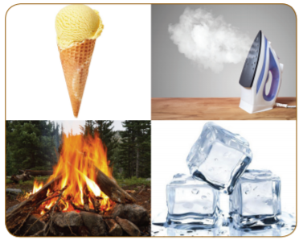
We see a number of objects in our daily life. Some of them are cold and some of them are hot.
Sometimes we may say that two objects are equally hot or cold. But there will be some difference in their hotness or coldness. How do you decide, which is hotter and which is colder? You need a reliable quantity to decide the degree of hotness or coldness of an object. That quantity is ‘temperature’.
Temperature is a physical quantity that expresses the degree of hotness or coldness of a substance. Heat energy given to a substance will increase its temperature. Heat energy removed from a substance will lower its temperature.
Temperature is defined as a measure of the average kinetic energy of the particles in a system. The S I unit of temperature is kelvin. Thermometers are used to measure the temperature directly. Usually, thermometers are calibrated with some standard scales. Celsius, Fahrenheit, Kelvin are the most commonly used scales to measure temperature.
Activity 2
From the newspaper or television, collect the highest and lowest temperature experienced in your nearest town or city for a week and record the values in a tabular column. Does this data remain same throughout the year?
Flow of electric charges, in a particular direction is known as ‘electric current’. The magnitude of electric current is the amount of electric charges flowing through a conductor in one second.
Electric current equal to Amount of electric charge by time
I equal to capital q by t
Electric charge is measured in coulomb. The S I unit of electric current is ampere and it is denoted as A.
If one coulomb of charge is flowing through a conductor in one second, then, the amount of current flowing is said to be one ampere. Ammeter is the device used to measure ‘electric current’ (Figure 1 point 2).
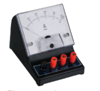
Activity 3
Connect a battery, an ammeter and a lamp in series as shown in the figure. Note the ammeter reading. It is the amount of current flowing in the circuit.
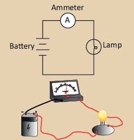
Problem 1
If 2 coulomb of charge flows through a circuit for 10 seconds, calculate the current.
Solution
Charge (Q) equal to 2 C; Time (t) equal to 10 s
I equal to Q by t equal to 2 by 10 equal to 0.2 A
Amount of substance is a measure of the number of entities (particles) present in a substance. The entity may be an atom, molecule, ion, electron or proton etc. Generally, the amount of substance is directly proportional to the number of atoms or molecules.
Can you count the number of copper coins in the picture? We can count them easily. But, can you count the number of copper atoms in a coin? It is very difficult to count the number of atoms because they are not visible. The number of atoms or molecules in a substance is measured in mole. It is a S I unit.
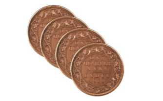
Mole is defined as the amount of substance, which contains 6.023 into 10 power 23 entities. It is denoted as ‘mol’.
More to Know
The number 6.023 into 10 power 23 is also known as Avogadro Number.
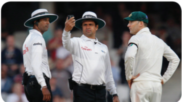
Have you seen these scenes on the television? What is the umpire doing? He is checking the intensity of light by using an instrument. The measure of the power of the emitted light, by a light source in a particular direction, per unit solid angle is called as luminous intensity. The S I unit of luminous intensity is candela and is denoted as ‘c d’.
The light emitted from a common wax candle is approximately equal to one candela. Luminous intensity is measured by ‘photometer’ (Luminous Intensity Meter) which gives the luminous intensity in terms of candela directly.
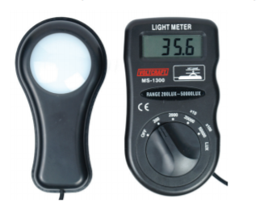
Apart from the seven fundamental units, we have two more units known as derived units, we will study about them now.
Info bits
Luminous flux or Luminous power is the measure of the perceived power of light. Its S I unit is ‘lumen’.
One lumen is defined as the luminous flux of the light produced by the light source that emits one candela of luminous intensity over a solid angle of one steradian.
Plane angle is the angle made at the intersection of two straight lines or intersection of two planes. The S I unit of plane angle is ‘radian’ and is denoted as ‘rad’.
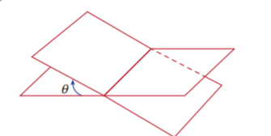
Radian is the angle subtended at the centre of a circle by an arc whose length is equal to the radius of the circle (Fig 1 point 7).
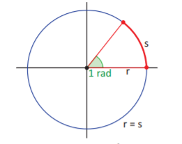
pai radian equal to 180 degree
1 radian equal to 180 degree by Pai
Problem 2
Convert 60 degree into radian.
Solution
We know that,
1 degree equal to Pai divided by 180
60 degree equal to Pai by 180 into 60 equal to Pai by 3 radian
Problem 3
Convert Pai by 4 into degrees.
Solution
We know that,
pai radian equal to 180 degree
Pai by 4 radian equal to 180 by 4 equal to 45 degree
Solid angle is the angle formed by three or more planes intersecting at a common point. It can also be defined as ‘angle formed at the vertex of the cone’. The S I unit of solid angle is ‘steradian’ and is denoted as ‘s r’.
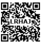
Steradian is the solid angle at the centre of a sphere subtended by a portion whose surface area is equal to the square of the radius of the sphere.
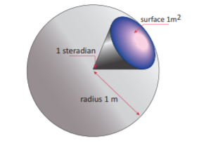
Do you Know?
Until 1995, plane angle and solid angle were classified under supplementary quantities. In 1995, they were shifted to derived quantities.
Table 1 point 2 shows Difference between plane angle and solid angle in two columns
Plane Angle |
Solid Angle |
It is the angle made at the point of intersection of two lines or planes. |
It is the angle by the intersection of three or more planes at a common point. |
It is two dimensional |
It is three dimensional. |
Its unit is radian. |
Its unit is steradian |
Clocks are used to measure time intervals. So many clocks are being used from the ancient time. Scientists have modified the mechanism of the clocks every time to obtain accuracy.
There are two types of clocks based on display. They are:
1. Analog clocks
2. Digital clocks
1. Analog clocks
Analog clocks look like a classic clock. It has three hands to show the time.
Hours hand
It is short and thick. It shows ‘hour’.
Minutes hand
It is long and thin. It shows ‘minute’.
Seconds hand
It is long and very thin. It shows ‘second’. It makes one rotation in one minute and 60 rotations in one hour.
Analog clocks can be driven either mechanically or electronically.
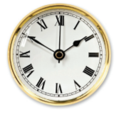
Activity 4
Make a model of an analog clock using card board.
2. Digital clocks
A digital clock displays the time directly. It shows the time in numerals or other symbols. It may have 12 hours or 24 hours display. Recent clocks are showing date, day, month, year, temperature etc. Digital clocks are often called as electronic clocks.
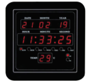
Activity 5
Make a model of a digital clock using match sticks on a card board, with date and time.
There are different types of clocks based on working mechanism. They are:
1. Quartz clock
2. Atomic clock
1. Quartz clock
These clocks are activated by ‘electronic oscillations’, which are controlled by a ‘quartz crystal’. The frequency of a vibrating crystal is very precise. So, quartz clock is more accurate than mechanical clock. These clocks have an accuracy of one second in every 10 power 9 seconds.
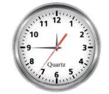
2. Atomic clock
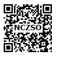
These clocks make use of periodic vibrations occurring within the atom. These clocks have an accuracy of one second in every 10 power 13 seconds. Atomic clocks are used in Global Positioning System (G P S), Global Navigation Satellite System (GLONASS) and International Time Distribution Services.
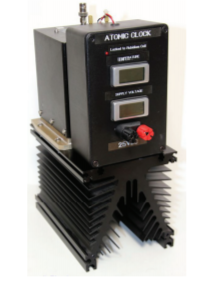
Activity 6
You may have heard about the ‘Sun Dial’. Construct a sundial of your own and read out the values from morning to evening. Compare your values with modern clocks.
Do you know?
Greenwich Mean Time (G M T) is the mean solar time at the Royal Observatory, located at Greenwich in London. It is measured at the longitude of zero degree. The Earth is divided into 24 zones, each of a width of 15 degree longitude. These regions are called as ‘Time Zones’. Time difference between two adjacent time zones is 1 hour.
Indian Standard Time (IST)
The location of Mirzapur in Uttar Pradesh is taken as the reference longitude of the Indian Standard Time. It is located at 82.5 degree longitude. INDIAN STANDARD MERIDIAN IST equal to G M T plus 5:30 hours
We have seen that measurement is the base of all experiments in science and technology. The value of every measurement contains some uncertainty. These uncertainties are called as errors. Error is defined as the difference between the real value and the observed value.
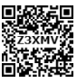
While taking measurements, errors should be minimum and the measured values should be precise and accurate. Both precision and accuracy may see to be same. But they are not similar.
Look at the arrows shot by three persons (Figure 1 point 13). In the first image all the arrows are hit at the centre. In the second image, all the arrows are hit at the same place but not at the centre. It shows that first person is precise and accurate. The second person is precious but not accurate. But, the third person is neither precise nor accurate.
Accuracy is the closeness of a measured value to the actual value or true value. Precision is the closeness of two or more measurements to each other. While making measurements, accuracy is always desired. The measured value should be close to the true value.
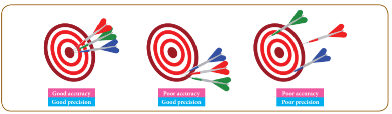
While we prepare a dish, we choose the ingredients approximately. We do not measure them accurately always. Similarly, it is not possible to set the exact value while taking measurements. Sometimes we take the approximate value. Approximation is the process of finding a number, which is acceptably close to the exact value of the measurement of a physical quantity. It is an estimation of a number obtained by rounding off a number to its nearest place value.
When the data are inadequate, physicists need an approximation to find the solution for problems. Approximations are usually based on certain assumptions having a scientific background and they can be modified whenever accuracy is needed
Activity 7
Calculate the approximate ‘heart beat’ of a man in a day (Hint: Take number of heart beats per minute as 75, approximately)
Calculators are widely used in day to day life to do the calculations. The result given by a calculator has too many digits. Hence, the result containing more digits should be rounded off. The technique of rounding off is used in many areas of physics.
Decide which is the last digit to keep.
Leave it the same, if the next digit is less than 5.
Increase it by one, if the next digit is 5 or greater than 5.
Problem 4
Round off the number 1.864 to two decimal places.
Solution
We need to round off the number to two decimal places. So, the last digit to be kept is 6. Since the next digit is less than 5, we can retain 6 as it is. So the answer is 1.86.
Problem 5
Round off the number 1.868 to two decimal places.
Solution
We need to round off the number to two decimal places. So, the last digit to be kept is 6. Since the next digit is more than 5, we should increase the second digit by one. So, the answer is 1.87.
The need of standard units for physical quantities was recognised in the 11th General Conference on Weights and Measures in 1960.
Length, mass, time, temperature, electric current, amount of substance and luminous intensity are called base quantities.
Temperature is the measure of hotness or coldness of a substance. Its S I unit is kelvin.
Electric charge is measured in coulumb and electric current is measured in ampere.
The S I unit of amount of substance is mole.
Luminous intensity is measured in candela.
Quartz clock uses the ‘electronic oscillations’ controlled by a ‘quartz crystal’.
Atomic clock uses the ‘periodic vibrations occurring within the atom’.
Accuracy is the closeness of a measured value to the actual value.
Precision is the closeness of two or more measurements to each other.
Approximation is the process of finding the solution by means of ‘estimation’.
Amount of substance - Measure of number of entities (particles) present in a substance.
Calibration - Process of configuring an instrument in a particular range.
Electric current- Flow of electric charges (electrons) in a unit time.
Electronic Oscillation - Oscillations produced by an electronic circuit.
Luminous Intensity - Amount of light emitted by a light source in a particular direction per unit time.
Plane angle - Angle made at the point of intersection of two lines or planes.
Quartz Crystal - Crystal formed by Silicon and Oxygen (Sio2).
Solid angle - Angle made at the point of intersection of three or more planes.